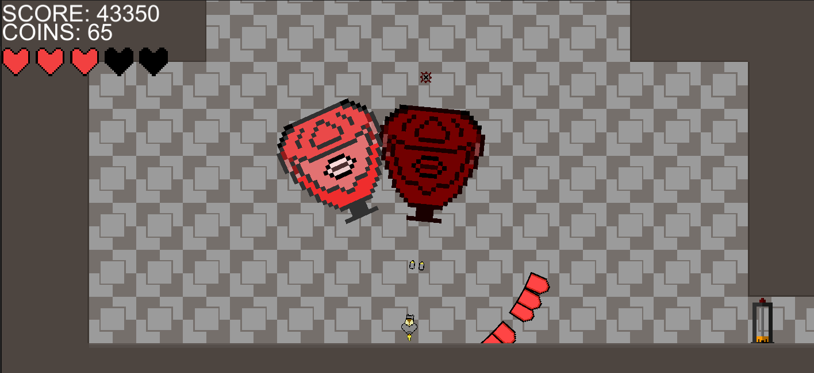
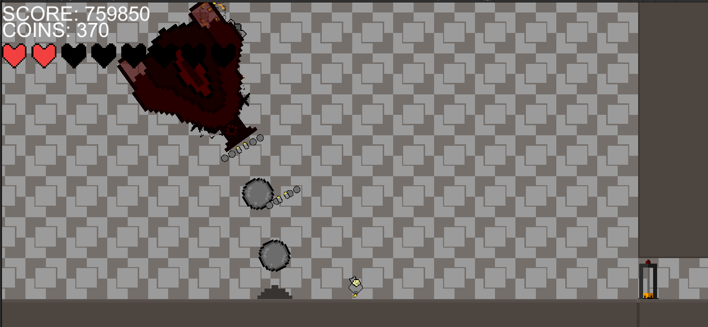

check('question1', 'Please enter a valid age').isInt({ min: 0, max: 1500 });
check('question2', 'Please enter your pet\'s breed').isLength({ min: 3 });
check('question3', 'Please give the level of severity').isIn(['experiencing mild', 'experiencing moderate', 'experiencing severe']);
check('question4', 'Please state your concern').isLength({ min: 3 });
check('question5_num', 'Please enter the duration').isInt({ min: 1 });
check('question5_unit', 'Please select a duration type').isIn(['minutes', 'hours', 'days', 'months']);
check('question6', 'Please keep other symptoms under 50 characters').optional().isLength({ max: 500 });
check('insured', 'Please provide insurance information').isIn(['yes', 'no']);
check('max_tokens', 'Please enter a valid response length (50-500)').isInt({ min: 50, max: 500 });fetch('http://your-api-endpoint', {
method: 'POST',
body: formData
})
.then(response => response.json())
.then(output => {
spinner.classList.remove('visible');
if (output && output.errors) {
output.errors.forEach(err => {
const msg = err.msg || 'Invalid input';
showFieldError(err.param, msg);
});
} else if (output && output.text) {
document.getElementById('ai-output').innerText = output.text;
} else {
document.getElementById('ai-output').innerText = JSON.stringify(output);
}
})
.catch(err => {
spinner.classList.remove('visible');
if (globalInvalid) {
globalInvalid.innerText = 'Network or server error: ' + err.message;
globalInvalid.classList.add('visible');
}
});I created a website to help pet owners diagnose low level concerns and give general advice to what may be going on with their pet. As seen above, I provided a couple code snippets to show what I can get done.
Through this project, I learned how to implement Chat GPTs API as well as getting experience making both client side forms and server side validation to work with it.
In making this site, I learned how to user input with form validation, implementing an API with a secured server made with node.js communicating with the client, and both the importance of and how to display visual feedback on a webpage.
Standoff is a collection of 2D mini-games I and my team developed to learn how to use AR. It was based around using playing cards to activate both which minigame to play, and what mode. This would be determined through the rank / suit of a playing card. In this project, I got to work on making a runner minigame with changing speed and coin gain based on the chosen card.
By making this game, I learned how to implement AR mechanics into gameplay through the use of Vuforia, and gained experience making fun, condensed, experiences for the player. It was fun project to build as it was one of, if not my first, experiences working on a game as a team.


Desert Delver was my first big game project. It was made as a sort of classic arcade game, with the progression about leveling up the player after fighting waves of enemies and unlocking abilities after defeating bosses. I worked on this game on my own, creating all the code, art, animations, etc.
By developing this game, I learned the fundamentals of how unity works, such as how to have scripts communicate with each other. I had to also learn C# and game design, such as having to balance enemy densities in difficulty modes, the in game economy, and fair but challenging combat with engaging boss fights.